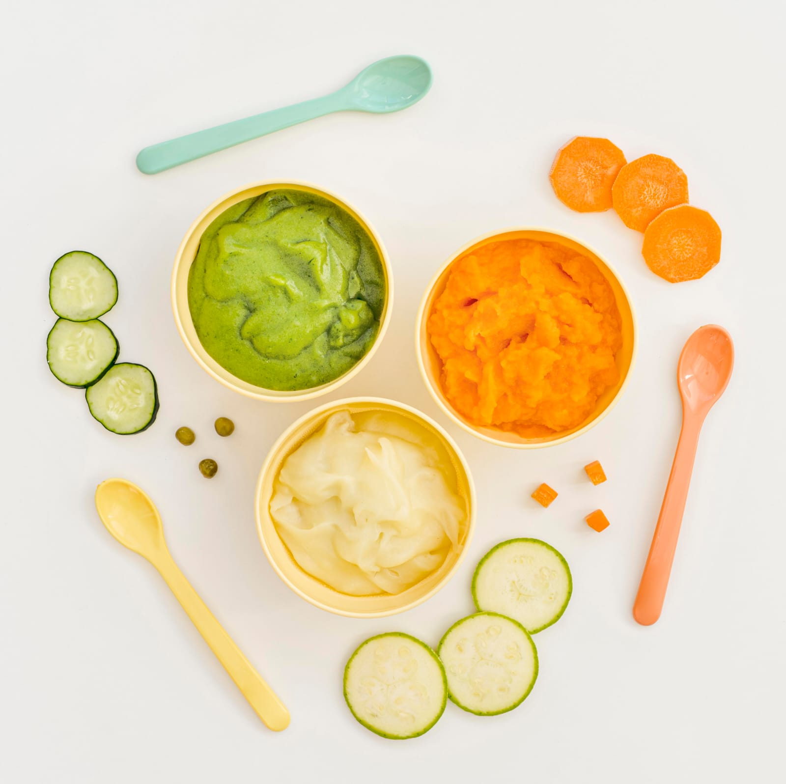
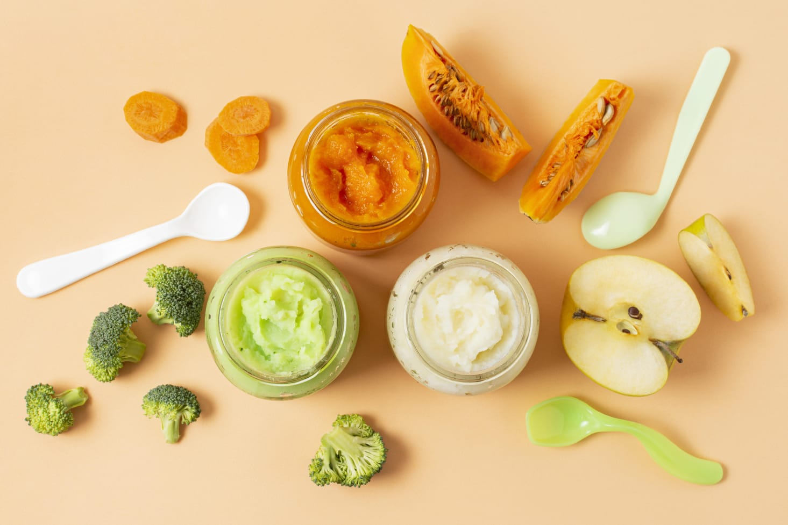
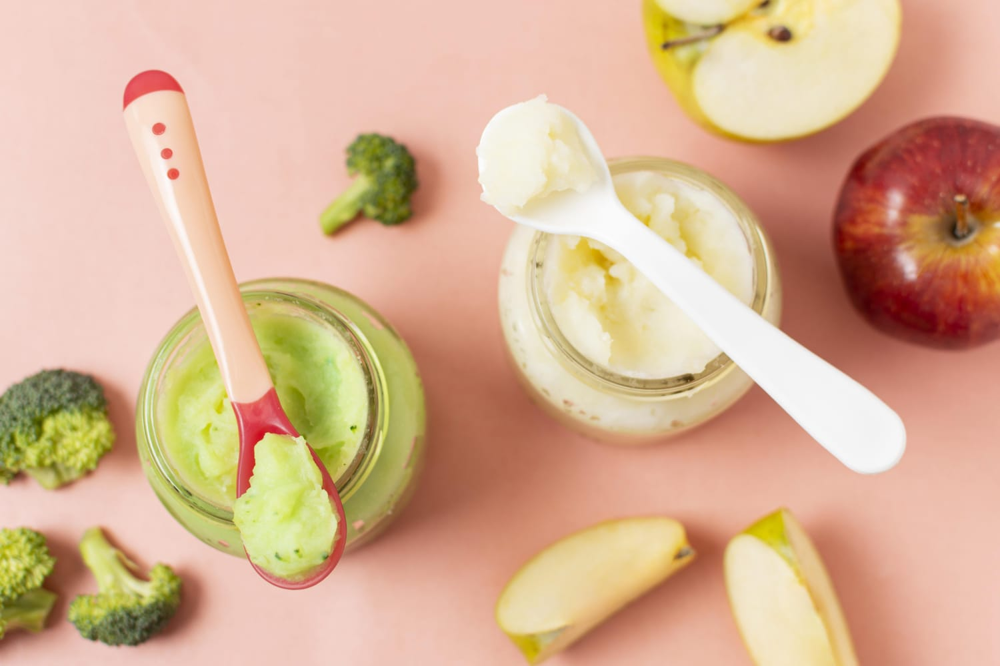

Este material é para você!
Mãe de 1º filho: precisa de segurança, praticidade e variedade. Receitas testadas por mães reais, nutricionistas e pediatras, com índice clicável por fase, dicas de textura e nutrição — sem enrolação, direto ao ponto.
Pai solo/ocupado: cardápio para quem não cozinha, passo a passo simples, ingredientes comuns e preparo rápido — refeições seguras, saudáveis e sem monotonia, mesmo para quem tem pouco tempo.
Cuidador ou Nutricionista: guia pronto com 337 receitas, organização por fases, bônus adaptáveis, material didático para agregar valor ao seu atendimento ou consultoria.
Benefícios para sua rotina
Receitas 100% seguras
para cada etapa da introdução alimentar, criadas e aprovadas por especialistas com dicas reais sobre textura, nutrientes e prevenção de alergias.
para cada etapa da introdução alimentar, criadas e aprovadas por especialistas com dicas reais sobre textura, nutrientes e prevenção de alergias.
Praticidade e variedade
tudo organizado por faixa etária e objetivo, com cardápios prontos, índice clicável e orientações para poupar tempo.
tudo organizado por faixa etária e objetivo, com cardápios prontos, índice clicável e orientações para poupar tempo.
Exclusivo Black Novembro
bônus: cardápios mensais, lista de compras, grupo de suporte online e garantia de satisfação total.
bônus: cardápios mensais, lista de compras, grupo de suporte online e garantia de satisfação total.
Aprovação real
depoimentos de mães, pais e profissionais, mostrando transformação na hora da alimentação e aceitação pelos bebês.
depoimentos de mães, pais e profissionais, mostrando transformação na hora da alimentação e aceitação pelos bebês.
Depoimentos de Quem Comprou
“Comprei ainda insegura, mas as receitas são mesmo práticas e o índice ajudou MUITO! Meu bebê agora aceitou cenoura e batata doce, que antes nem chegava perto.”
— Ana Carolina (mãe de 1ª viagem)
“Me salvou! Trabalho e cuido da minha filha. Segui o cardápio e as orientações, sou pai solo e agora consigo variar muito melhor sem perder tempo.”
— Ricardo (pai solo, MG)
“Uso as receitas na creche e recomendo para as famílias, o material é lindo e completo, já rendeu elogio das mães.”
— Laura (nutricionista, RS)
Perguntas Frequentes
Serve para bebês de todas as idades?
Sim — dividido por fases (6-12 meses, 12-24 meses, +24 meses), fácil adaptar para crianças e até para família inteira.
Sim — dividido por fases (6-12 meses, 12-24 meses, +24 meses), fácil adaptar para crianças e até para família inteira.
Funciona mesmo se não souber cozinhar?
Sim — receitas e lista de compras fáceis, ingredientes simples, preparo direto ao ponto.
Sim — receitas e lista de compras fáceis, ingredientes simples, preparo direto ao ponto.
Tem suporte?
Sim — você entra no grupo de apoio e pode esclarecer dúvidas rapidamente com especialistas.
Sim — você entra no grupo de apoio e pode esclarecer dúvidas rapidamente com especialistas.
Inclui opções para restrições?
Inclui! Sem sal para menores de 1 ano, sugestões para intolerantes e dicas de substituição.
Inclui! Sem sal para menores de 1 ano, sugestões para intolerantes e dicas de substituição.
Garantia incondicional de 7 dias: Não gostou, não paga. Acesso digital imediato com preço promocional Black Novembro. Zero risco.